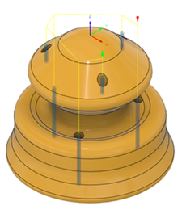

<div id="checkForOcclusions"><p>現在の工具方向が原因でドリル加工できない、同じ直径の穴を選択解除します。</p>
<p>たとえば、パーツの下側に穴があり、ドリルがそこに到達できない場合、穴はドリル加工されません。</p>
<table class="tipTable" cellspacing="10">
<tr>
<td><center></center></td>
<td><center></center></td>
</tr><tr>
<td><center><p><b>選択解除</b></p></center></td>
<td><center><p><b>選択済み</b></p></center></td>
</tr></table>
</div>